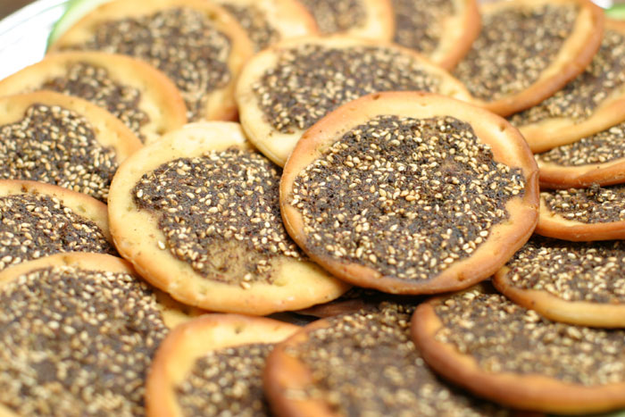
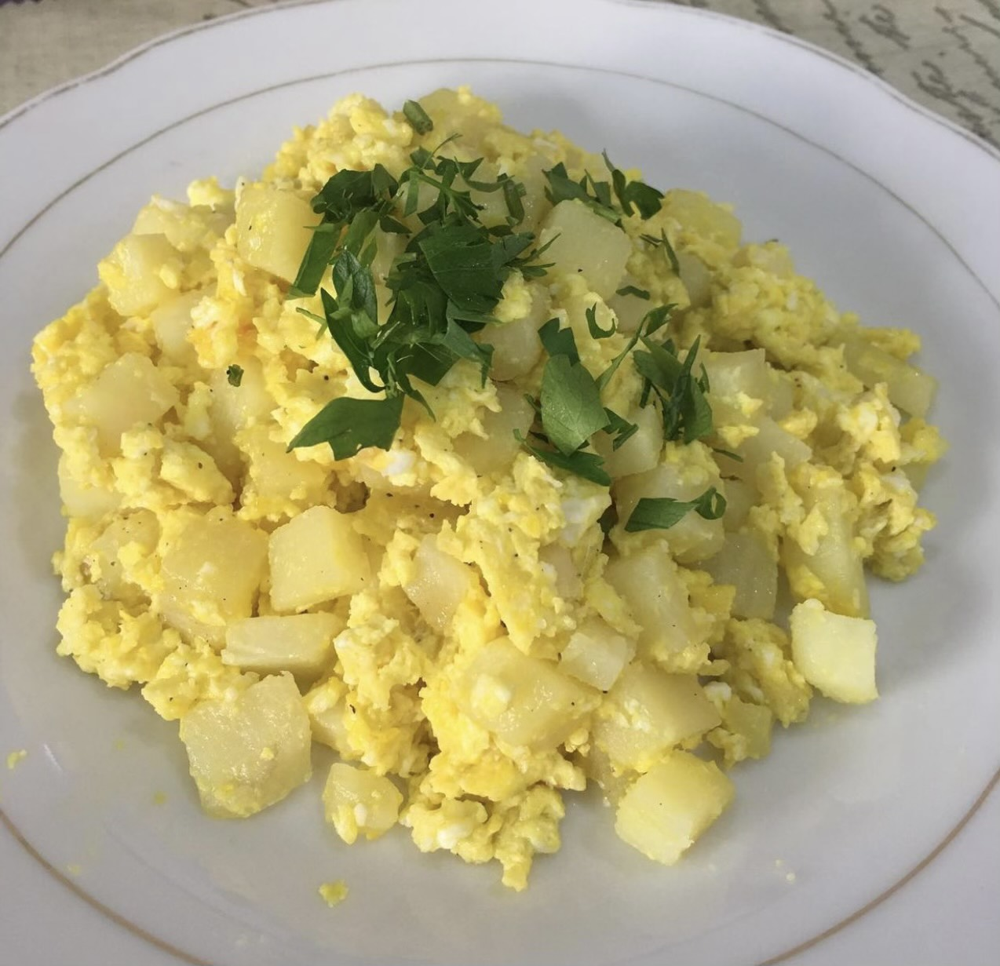

Breakfast Recipes:
Shakshoukah
Ingredients:
- 1 large onion, finely chopped
- 2 fresh large tomatoes, finely diced
- Parsley, finely chopped
- 4 eggs
- 4 tablespoons of olive oil
- Salt
- Black pepper
Directions:
- Heat the olive oil in a pan on medium heat
- Add chopped onions and stir until golden brown
- Add diced tomatoes and stir for 5 minutes
- Add eggs and mix in pan
- Add pepper and salt, season to taste
- Continue cooking on medium heat until eggs are done
- Add finey chopped parsley as garnsih
- Enjoy!
Manakeesh Zaatar

Ingredients:
Dough:
- 6 cups of all-purpose flour
- 1/2 cup of olive oil
- 1/2 teaspoon of salt
- 1 tablespoon of sugar
- 1 cup of yogurt
- 2 cups of warm milk
- 1 1/2 tablespoon of instant yeast
Zaatar:
- 10 tablespoons of zaatar
- 1/2 cup of olive oil
Directions:
- Put all of the dough ingredients in a large mixing bowl until the dough is soft and no longer sticky
- Form the dough into one large ball and leave it on the counter to rise for 1 hour
- Prepare the zaatar by mixing the zaatar and olive oil together in a bowl
- Preheat the oven to 350° F
- After 1 hour, divide the large dough ball into smaller dough balls, about the size of a tennis ball
- Flatten each dough ball into a circle with a 5 inch diameter
- Take the zaater you mixed earlier and apply a generous layer on the face of the dough
- Bake for 7-8 minutes or until dough is golden brown
- Enjoy!
Mfarakeh

Ingredients:
- 3 large potatoes
- 4 eggs
- Salt
- Pepper
- Vegetable oil
Directions:
- Peel potatoes and chop into small cubes
- Place the vegetable oil in a pot on medium to high heat
- Place the chopped potatoes into the pot and fry until golden brown
- Place the fried potatoes into a different pan and add eggs, salt, and pepper
- Mix contents of pan until eggs are done
- Serve with pita bread
- Enjoy!